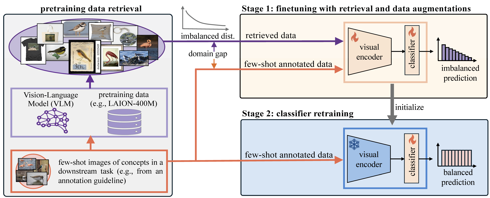
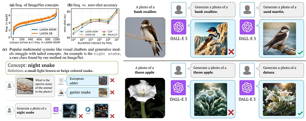
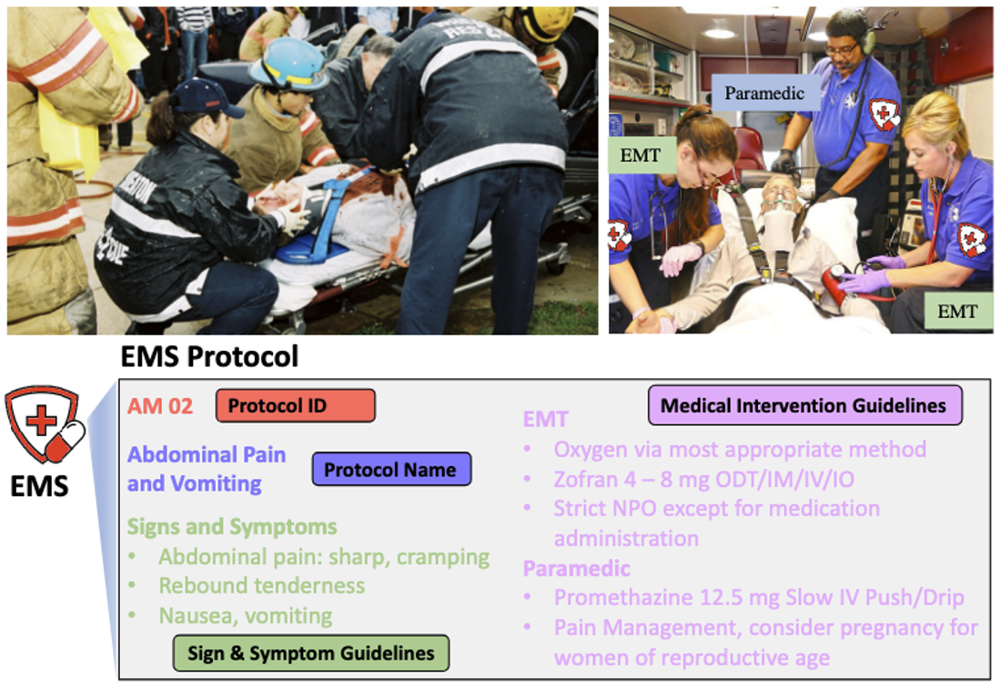
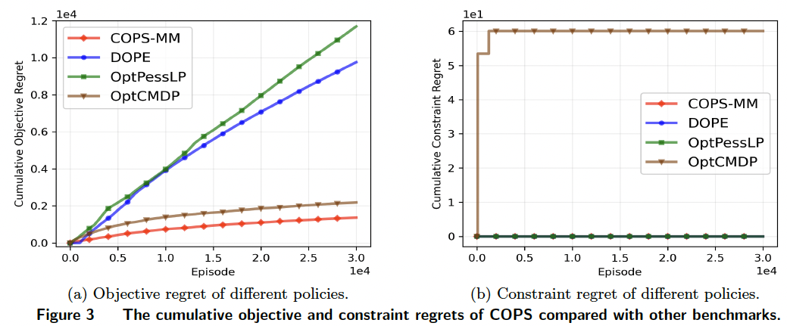
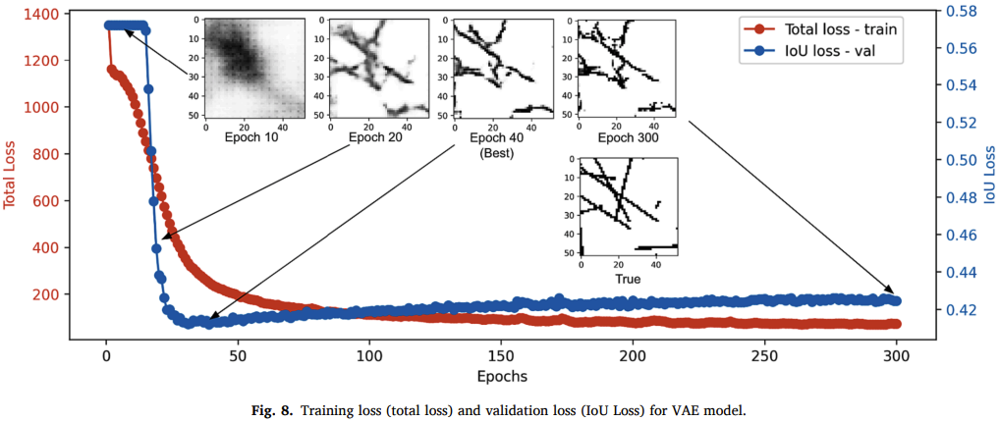
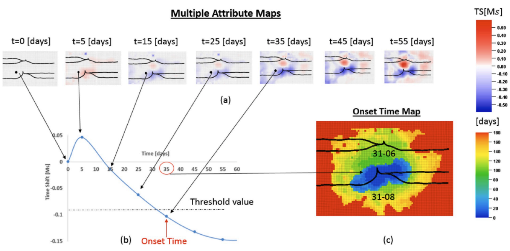

News
- June 2024: Coordinated the 4th Open World Vision Workshop at CVPR'24.
- June 2024: I will present our paper in CVPR'24, Seattle.
- June 2024: Our paper "The Neglected Tails in Vision-Language Models" was accepted to ICML 2024 DMLR Oral.
- Mar 2024: I was awarded TAMU CSE department travel grant.
- Mar 2024: I received TAMU CSE Graduate Teaching Assistant Excellence Award (1 each year).
- Mar 2024: I passed Ph.D. qualify exam with 99% percentile.
- Feb 2024: 1 paper accepted to CVPR'24.
Research
My research interest includes computer vision, cyber-physical systems, and machine learning for healthcare.
My current research focuses on analyzing the limitations of pretrained foundation models (e.g. Vision-Language Models)
and developing better algorithms to adapt foundation models to downstream tasks in zero-shot and few-shot setup.
|

|
Few-Shot Recognition via Stage-Wise Augmented Finetuning
Tian Liu, Huixin Zhang, Shubham Parashar, Shu Kong
arxiv /
project /
code
We explore retrieval-augmented learning for few-shot recognition,
and propose Stage-Wise Augmented fineTuning (SWAT) method to mitigate the imbalanced distribution and domain gap issues,
outperforming previous SOTA methods by >10% accuracy.
|

|
The Neglected Tails in Vision-Language Models
Shubham Parashar*, Zhiqiu Lin*, Tian Liu* (*co-first authors), Xiangjue Dong,
Yanan Li, Deva Ramanan, James Caverlee, Shu Kong
[CVPR 2024, ICML 2024 DMLR Oral]
paper /
DMLR /
arxiv /
project /
code
We expose the long-tailed concept distributions in VLMs' pretraining data
and reveal failues of SOTA multimodal systems (e.g. GPT-4V, DALL-E 3).
We propose retrieval-augmented learning, achieving SOTA zero-shot recognition performance.
|

|
EMSAssist: An End-to-End Mobile Voice Assistant at the Edge for
Emergency Medical Services
Liuyi Jin, Tian Liu, Amran Haroon, Radu Stoleru, Michael Middleton, Ziwei Zhu, Theodora Chaspari
[MobiSys 2023]
paper /
demo /
code
We build the first end-to-end mobile voice assistant system to assist Emergency Medical Technicians in selecting proper protocols for critical medical intervention.
|

|
Safe Reinforcement Learning with Contextual Information: Theory and Applications
Junyu Cao, Esmaeil Keyvanshokooh, Tian Liu
ssrn /
code
We develop a safe reinforcement learning algorithm for personalized medical prescription considering patient's contextual information
(e.g. age, gender, race etc.),
achieveing sub-linear regret with zero safety violation.
|

|
A Machine Learning-based Hybrid Model for Fracture Parameterization and
Distribution Prediction in Unconventional Reservoirs
Tian Liu, Ruxin Zhang
[Computers and Geotechnics 2024]
paper
We develop Variational Autoencoder (VAE) model for fracture parameterization
and distribution prediction using reservoir production data.
|

|
Integration of Time-lapse Seismic Data using the Onset Time Approach: the Impact of Seismic Survey Frequency
Tian Liu, Hongquan Chen, Gill Hetz, Akhil Datta-Gupta
[Journal of Petroleum Science and Engineering 2020]
paper
We develop onset-time approach for efficient
and robust integration of 4D seismic data for reservoir model calibration, achieveing 2x error reduction and 6x speedup
compared to traditional amplitude-matching methods.
|
Teaching Assistance
- CSCE606: Software Engineering, 2023 Fall
- CSCE313: Introduction to Computer Systems, 2023 Summer
- CSCE110: Programming I, 2023 Summer
Professional Services
- Coordinator of 4th Open World Vision Workshop at CVPR'24.
- Reviewer for Pattern Recognition
- Reviewer for Applied Thermal Engineering, Geoenergy Science and Enginerring, SPE Journal
Selected Awards
- TAMU CSE Department Travel Grant, 2024
- TAMU CSE Department Graduate Teaching Assistant Excellence Award (1 each year), 2024
- 1st place of SPE Student Paper Contest in TAMU, 1st place of Gulf Coast Region, 3rd place of worldwide Championship, 2018
- 2nd place of SPE Petrobowl Knowledge Contest in North American Region, 2017
- 1st place of SPE Petrobowl Knowledge Contest in Asia-Pacific Region, 2015
- Dean's Award (4 out of 296), China University of Petroleum Beijing, 2014
- National Scholarship (highest honor in China), Ministry of Education of China, 2012
Miscellaneous
- I have two big (20 lbs :) orange Maine Coon brothers, named Thor and Loki .
|
{kind=link}